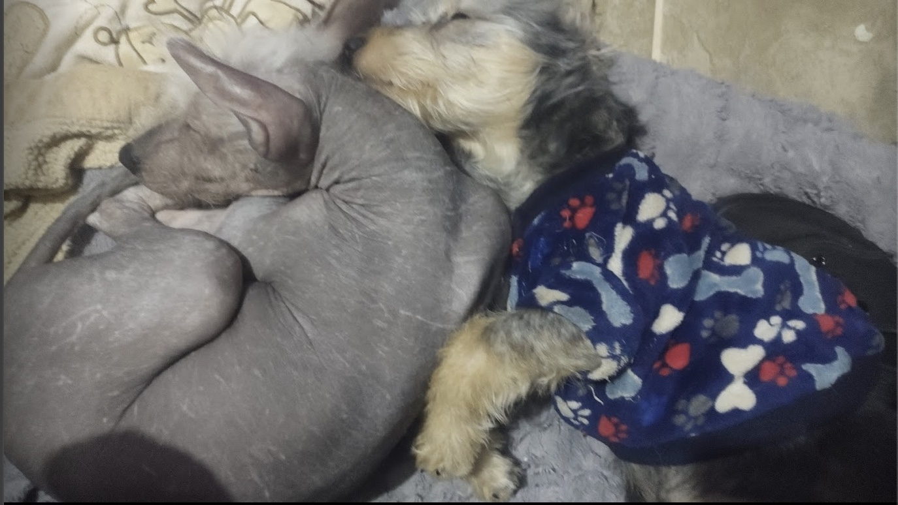

El Xoloitzcuintle o Xolo es un perro sin pelo, de piel muy suave y ligeramente más largo que alto. La piel puede ser de color negro, gris, rojo, marrón, bronce y rubio. Hay tres tamaños de esta raza. El Xolo mexicano miniatura adulto suele medir de 25 a 35 cm, el mediano, de 36 a 45 cm y el estándar de 46 a 60 cm.
El xoloitzcuintle con pelo fue despreciado durante mucho tiempo. Sin embargo, se trata de la versión original de la raza.
